Cartography asset proof
250 independent SVGs, not a generated world. Open this file from a repository checkout. Each tile loads the actual registered asset. The ink is transparent except for two blank parchment substrates. Verify fidelity at intended display sizes before accepting the art.
adventure (54)
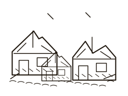
adventure.abandoned_village.v1256 × 192 · illustration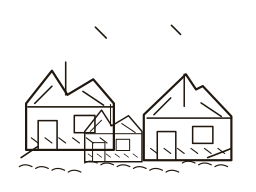
adventure.abandoned_village.v2256 × 192 · illustration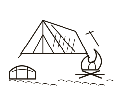
adventure.adventurer_camp.v1256 × 192 · illustration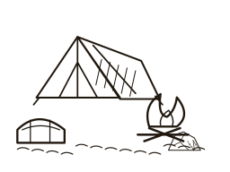
adventure.adventurer_camp.v2256 × 192 · illustrationadventure.ancient_monument.v1256 × 192 · illustration
adventure.ancient_monument.v2256 × 192 · illustration
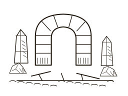
adventure.ancient_ruins.v1256 × 192 · illustration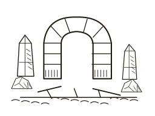
adventure.ancient_ruins.v2256 × 192 · illustration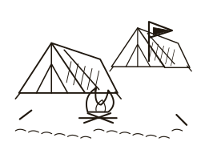
adventure.bandit_camp.v1256 × 192 · illustration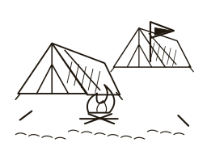
adventure.bandit_camp.v2256 × 192 · illustration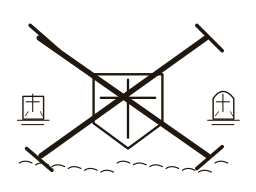
adventure.battlefield.v1256 × 192 · illustration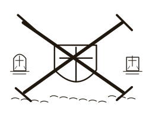
adventure.battlefield.v2256 × 192 · illustrationadventure.camp.harvest180 × 92 · symbol
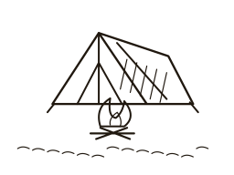
adventure.camp.v1256 × 192 · illustration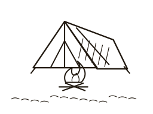
adventure.camp.v2256 × 192 · illustrationadventure.cave.harvest184 × 100 · symbol
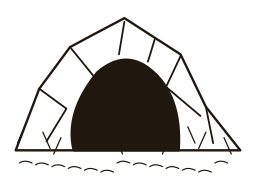
adventure.cave.v1256 × 192 · illustration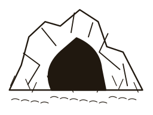
adventure.cave.v2256 × 192 · illustration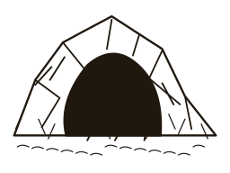
adventure.cavern.v1256 × 192 · illustration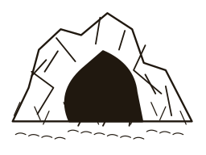
adventure.cavern.v2256 × 192 · illustration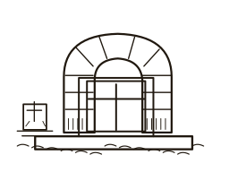
adventure.crypt.v1256 × 192 · illustration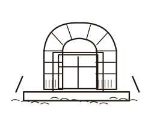
adventure.crypt.v2256 × 192 · illustration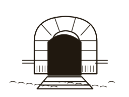
adventure.dungeon.v1256 × 192 · illustration
adventure.dungeon.v2256 × 192 · illustration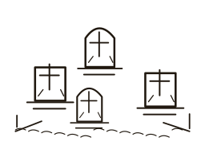
adventure.graveyard.v1256 × 192 · illustrationadventure.graveyard.v2256 × 192 · illustration
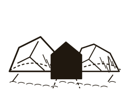
adventure.hidden_entrance.v1256 × 192 · illustration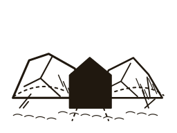
adventure.hidden_entrance.v2256 × 192 · illustrationadventure.magical_portal.v1256 × 192 · illustration
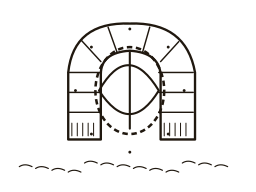
adventure.magical_portal.v2256 × 192 · illustration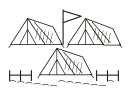
adventure.military_camp.v1256 × 192 · illustration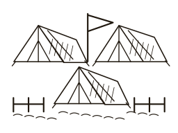
adventure.military_camp.v2256 × 192 · illustration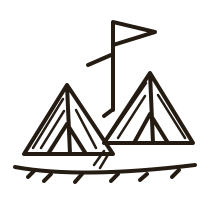
adventure.military_camp.symbol212 × 204 · symboladventure.mine.harvest132 × 88 · symbol
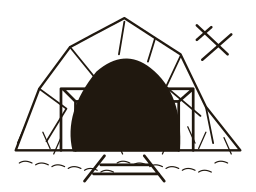
adventure.mine.v1256 × 192 · illustration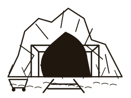
adventure.mine.v2256 × 192 · illustration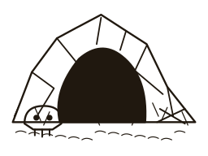
adventure.monster_lair.v1256 × 192 · illustration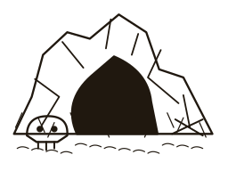
adventure.monster_lair.v2256 × 192 · illustrationadventure.point_of_interest.harvest164 × 100 · symbol
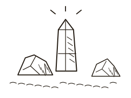
adventure.point_of_interest.v1256 × 192 · illustration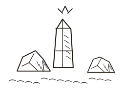
adventure.point_of_interest.v2256 × 192 · illustration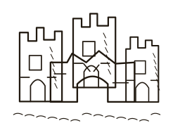
adventure.ruined_castle.v1256 × 192 · illustration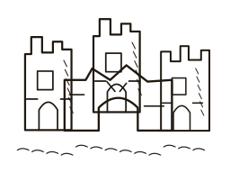
adventure.ruined_castle.v2256 × 192 · illustrationadventure.ruins.harvest180 × 92 · symbol
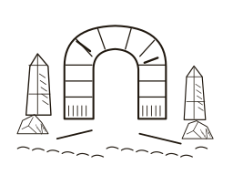
adventure.ruins.v1256 × 192 · illustration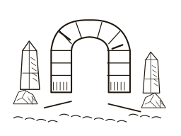
adventure.ruins.v2256 × 192 · illustration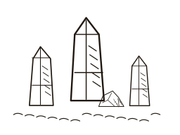
adventure.standing_stones.v1256 × 192 · illustration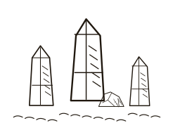
adventure.standing_stones.v2256 × 192 · illustration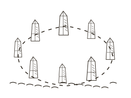
adventure.stone_circle.v1256 × 192 · illustration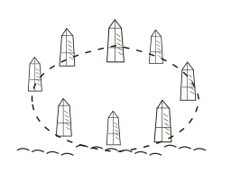
adventure.stone_circle.v2256 × 192 · illustration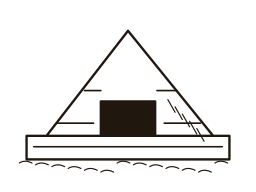
adventure.tomb.v1256 × 192 · illustration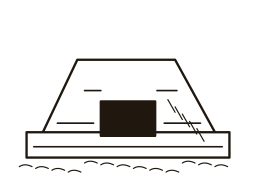
adventure.tomb.v2256 × 192 · illustration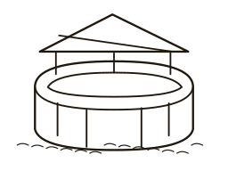
adventure.well.v1256 × 192 · illustration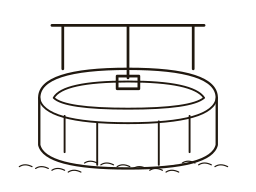
adventure.well.v2256 × 192 · illustrationdecor (21)
decor.compass.harvest477 × 441 · decoration
decor.corner_bottom_left.harvest129 × 132 · decoration
decor.corner_bottom_right.harvest123 × 132 · decoration
decor.corner_top_left.harvest120 × 135 · decoration
decor.corner_top_right.harvest114 × 129 · decoration
decor.edge_bottom.harvest420 × 51 · decoration
decor.edge_left.harvest45 × 360 · decoration
decor.edge_right.harvest48 × 360 · decoration
decor.edge_top.harvest366 × 45 · decoration
decor.fog_cloud.harvest216 × 108 · symbol
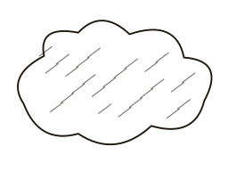
decor.fog_cloud.v1256 × 192 · decorationdecor.fog_cloud.v2256 × 192 · decoration
decor.fog_hatch.harvest236 × 164 · symbol
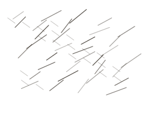
decor.fog_hatch.v1256 × 192 · decoration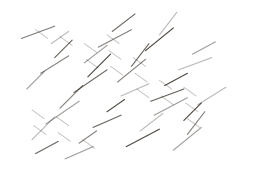
decor.fog_hatch.v2256 × 192 · decoration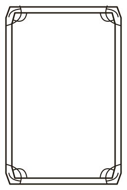
decor.legend_frame.v1256 × 384 · decoration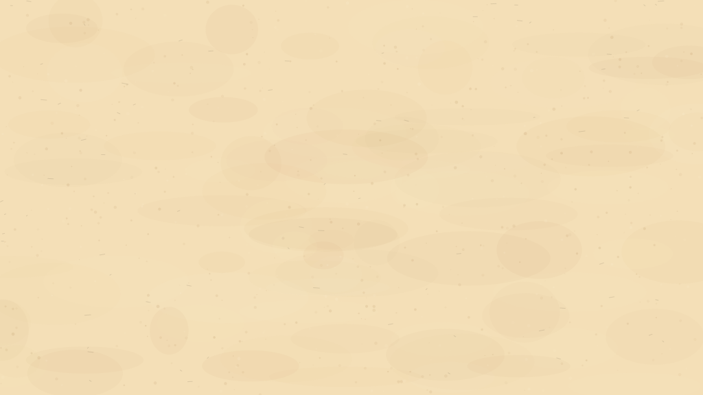
decor.parchment.v11024 × 576 · decoration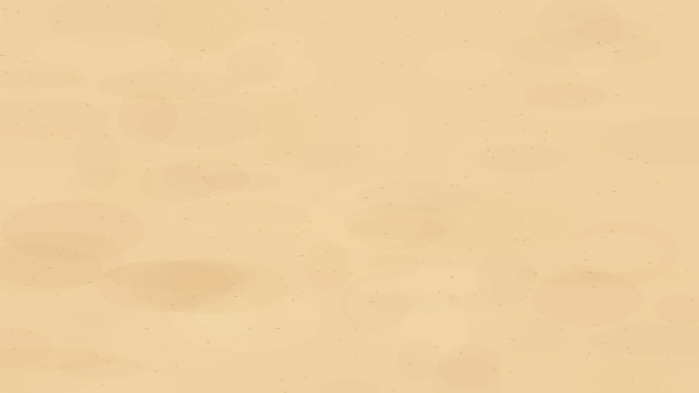
decor.parchment.v21024 × 576 · decorationdecor.quill.harvest176 × 112 · symbol
decor.scale_bar.v1384 × 48 · decoration
decor.title_ribbon.v1512 × 128 · decoration
markers (5)
markers.annotation.v196 × 96 · marker
markers.discovery_cross.v196 × 96 · marker
markers.party_position.v196 × 96 · marker
markers.unknown.v196 × 96 · marker
markers.visited.v196 × 96 · marker
settlements (70)
settlement.blacksmith.v1256 × 192 · illustration
settlement.blacksmith.v2256 × 192 · illustration
settlement.bridge.v1256 × 192 · illustration
settlement.bridge.v2256 × 192 · illustration
settlement.bridge.symbol196 × 148 · symbol
settlement.capital.harvest196 × 136 · symbol
settlement.capital.v1256 × 192 · illustration
settlement.capital.v2256 × 192 · illustration
settlement.castle.v1256 × 192 · illustration
settlement.castle.v2256 × 192 · illustration
settlement.cathedral.v1256 × 192 · illustration
settlement.cathedral.v2256 × 192 · illustration
settlement.church.harvest156 × 112 · symbol
settlement.church.v1256 × 192 · illustration
settlement.church.v2256 × 192 · illustration
settlement.city.harvest180 × 84 · symbol
settlement.city.v1256 × 192 · illustration
settlement.city.v2256 × 192 · illustration
settlement.cottage.v1256 × 192 · illustration
settlement.cottage.v2256 × 192 · illustration
settlement.dock.v1256 × 192 · illustration
settlement.dock.v2256 × 192 · illustration
settlement.farm.v1256 × 192 · illustration
settlement.farm.v2256 × 192 · illustration
settlement.fields.v1256 × 192 · illustration
settlement.fields.v2256 × 192 · illustration
settlement.fortress.v1256 × 192 · illustration
settlement.fortress.v2256 × 192 · illustration
settlement.guard_post.v1256 × 192 · illustration
settlement.guard_post.v2256 × 192 · illustration
settlement.hamlet.v1256 × 192 · illustration
settlement.hamlet.v2256 × 192 · illustration
settlement.harbour.v1256 × 192 · illustration
settlement.harbour.v2256 × 192 · illustration
settlement.house.v1256 × 192 · illustration
settlement.house.v2256 × 192 · illustration
settlement.inn.v1256 × 192 · illustration
settlement.inn.v2256 × 192 · illustration
settlement.keep.harvest104 × 76 · symbol
settlement.keep.v1256 × 192 · illustration
settlement.keep.v2256 × 192 · illustration
settlement.lighthouse.v1256 × 192 · illustration
settlement.lighthouse.v2256 × 192 · illustration
settlement.monastery.v1256 × 192 · illustration
settlement.monastery.v2256 × 192 · illustration
settlement.port.v1256 × 192 · illustration
settlement.port.v2256 × 192 · illustration
settlement.shrine.v1256 × 192 · illustration
settlement.shrine.v2256 × 192 · illustration
settlement.tavern.v1256 × 192 · illustration
settlement.tavern.v2256 × 192 · illustration
settlement.temple.v1256 × 192 · illustration
settlement.temple.v2256 × 192 · illustration
settlement.town.harvest168 × 92 · symbol
settlement.town.v1256 × 192 · illustration
settlement.town.v2256 × 192 · illustration
settlement.trading_post.v1256 × 192 · illustration
settlement.trading_post.v2256 × 192 · illustration
settlement.village.harvest136 × 88 · symbol
settlement.village.v1256 × 192 · illustration
settlement.village.v2256 × 192 · illustration
settlement.walled_town.v1256 × 192 · illustration
settlement.walled_town.v2256 × 192 · illustration
settlement.watchtower.v1256 × 192 · illustration
settlement.watchtower.v2256 × 192 · illustration
settlement.watermill.v1256 × 192 · illustration
settlement.watermill.v2256 × 192 · illustration
settlement.windmill.harvest132 × 92 · symbol
settlement.windmill.v1256 × 192 · illustration
settlement.windmill.v2256 × 192 · illustration
terrain (53)
terrain.beach.v1256 × 192 · illustration
terrain.beach.v2256 × 192 · illustration
terrain.canyon.v1256 × 192 · illustration
terrain.canyon.v2256 × 192 · illustration
terrain.cliff.v1256 × 192 · illustration
terrain.cliff.v2256 × 192 · illustration
terrain.dead_forest.v1256 × 192 · illustration
terrain.dead_forest.v2256 × 192 · illustration
terrain.deciduous_forest.v1256 × 192 · illustration
terrain.deciduous_forest.v2256 × 192 · illustration
terrain.dense_forest.v1256 × 192 · illustration
terrain.dense_forest.v2256 × 192 · illustration
terrain.desert.v1256 × 192 · illustration
terrain.desert.v2256 × 192 · illustration
terrain.dunes.v1256 × 192 · illustration
terrain.dunes.v2256 × 192 · illustration
terrain.glacier.v1256 × 192 · illustration
terrain.glacier.v2256 × 192 · illustration
terrain.grasslands.v1256 × 192 · illustration
terrain.grasslands.v2256 × 192 · illustration
terrain.jungle.v1256 × 192 · illustration
terrain.jungle.v2256 × 192 · illustration
terrain.marsh.v1256 × 192 · illustration
terrain.marsh.v2256 × 192 · illustration
terrain.mountain_pass.v1256 × 192 · illustration
terrain.mountain_pass.v2256 × 192 · illustration
terrain.mountain_peak.v1256 × 192 · illustration
terrain.mountain_peak.v2256 × 192 · illustration
terrain.mountain_range.harvest192 × 120 · symbol
terrain.mountain_range.v1256 × 192 · illustration
terrain.mountain_range.v2256 × 192 · illustration
terrain.pine_forest.v1256 × 192 · illustration
terrain.pine_forest.v2256 × 192 · illustration
terrain.plains.v1256 × 192 · illustration
terrain.plains.v2256 × 192 · illustration
terrain.plateau.v1256 × 192 · illustration
terrain.plateau.v2256 × 192 · illustration
terrain.ravine.v1256 × 192 · illustration
terrain.ravine.v2256 × 192 · illustration
terrain.rocky_coast.v1256 × 192 · illustration
terrain.rocky_coast.v2256 × 192 · illustration
terrain.rolling_hills.v1256 × 192 · illustration
terrain.rolling_hills.v2256 × 192 · illustration
terrain.snow_mountain.v1256 × 192 · illustration
terrain.snow_mountain.v2256 × 192 · illustration
terrain.swamp.v1256 × 192 · illustration
terrain.swamp.v2256 × 192 · illustration
terrain.tundra.v1256 × 192 · illustration
terrain.tundra.v2256 × 192 · illustration
terrain.valley.v1256 × 192 · illustration
terrain.valley.v2256 × 192 · illustration
terrain.volcano.v1256 × 192 · illustration
terrain.volcano.v2256 × 192 · illustration
tools (17)
tool.erase.harvest156 × 144 · symbol
tool.flag.harvest148 × 148 · symbol
tool.measure.harvest152 × 136 · symbol
tool.pan.harvest152 × 136 · symbol
tool.pencil.harvest156 × 140 · symbol
tool.pin.harvest140 × 148 · symbol
tool.zoom_in.harvest156 × 140 · symbol
tool.zoom_out.harvest156 × 136 · symbol
tools.center.v1128 × 128 · decoration
tools.checkbox_checked.v1128 × 128 · decoration
tools.checkbox_empty.v1128 × 128 · decoration
tools.fullscreen.v1128 × 128 · decoration
tools.history.v1128 × 128 · decoration
tools.info.v1128 × 128 · decoration
tools.layers.v1128 × 128 · decoration
tools.overview.v1128 × 128 · decoration
tools.search.v1128 × 128 · decoration
water (30)
water.archipelago.v1256 × 192 · illustration
water.archipelago.v2256 × 192 · illustration
water.boat.v1256 × 192 · illustration
water.boat.v2256 × 192 · illustration
water.island.v1256 × 192 · illustration
water.island.v2256 × 192 · illustration
water.lake.v1256 × 192 · illustration
water.lake.v2256 × 192 · illustration
water.ocean.v1256 × 192 · illustration
water.ocean.v2256 × 192 · illustration
water.pond.v1256 × 192 · illustration
water.pond.v2256 × 192 · illustration
water.reef.v1256 × 192 · illustration
water.reef.v2256 × 192 · illustration
water.river_crossing.v1256 × 192 · illustration
water.river_crossing.v2256 × 192 · illustration
water.river.v1256 × 192 · illustration
water.river.v2256 × 192 · illustration
water.sea.v1256 × 192 · illustration
water.sea.v2256 × 192 · illustration
water.ship.v1256 × 192 · illustration
water.ship.v2256 × 192 · illustration
water.shipwreck.v1256 × 192 · illustration
water.shipwreck.v2256 × 192 · illustration
water.spring.v1256 × 192 · illustration

water.spring.v2256 × 192 · illustrationwater.stream.v1256 × 192 · illustration
water.stream.v2256 × 192 · illustration
water.waterfall.v1256 × 192 · illustration
water.waterfall.v2256 × 192 · illustration